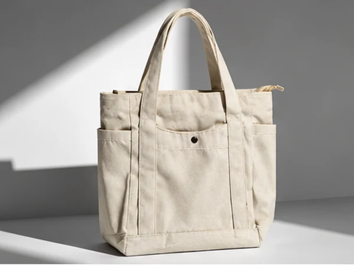

Spunbond vs Blacu vs Kanvas: Mana Bahan Goodie Bag yang Tepat untuk Acara Anda?

Dalam dunia konveksi goodie bag dan tote bag promosi, tiga material yang paling sering dibandingkan adalah Spunbond, Blacu, dan Kanvas. Ketiganya memiliki karakteristik serat kain, ketahanan beban, kemampuan cuci, dan rentang harga yang berbeda drastis. Simak bedah tuntas dari Goodebag Custom berikut agar Anda tidak salah memilih bahan.
1. Kain Spunbond (Non-Woven Polypropylene): Karakteristik & Ketebalan
Spunbond adalah bahan sintetis ramah lingkungan pengganti kantong plastik sekali pakai. Seratnya dipadatkan secara mekanis dan termal tanpa melalui proses tenun benang (non-woven).
- Gramasi Standar: Umumnya berkisar antara 50 gsm (tipis), 75 gsm (standar seminar/event), hingga 100 gsm (tebal dan kaku).
- Kelebihan: Pilihan warna kain sangat kaya (lebih dari 20 pilihan warna: biru, merah, hijau, kuning, hitam, navy), tahan cipratan air ringan, dan biaya produksinya paling terjangkau.
- Keterbatasan: Teksturnya agak kaku, kurang tahan disetrika pada suhu panas tinggi, dan batas beban ideal sekitar 3–5 kg.
- Cocok Untuk: Pameran akbar, festival publik, seminar kampus massal, atau kantong belanja ritel. Cek opsi tas ini di Paket Event & Promosi.
2. Kain Blacu (Unbleached Cotton): Keaslian & Nuansa Vintage
Kain blacu adalah kain tenun kapas alami yang belum melewati proses pemutihan kimiawi (bleaching). Warnanya khas broken white (krem kekuningan) dengan bintik-bintik serat biji kapas halus yang autentik.
- Kelebihan: Bernuansa natural/vintage, ramah lingkungan, lembut di kulit, mudah dicuci berulang kali, dan sangat indah dipadukan dengan sablon warna earthy/organik.
- Keterbatasan: Pilihan warna dasar kain terbatas pada broken white / krem alami.
- Cocok Untuk: Souvenir pernikahan, seminar lingkungan/kesehatan, workshop kreatif, dan goodie bag komunitas. Baca juga Panduan Memilih Goodie Bag Sesuai Jenis Acara.

3. Kain Kanvas (Cotton Twill / Marsoto): Standar Kemewahan & Durabilitas
Kanvas merupakan rajutan katun terpadat dan terkuat di kelas tas jinjing. Memiliki pola anyaman silang tegas yang sangat tahan gesekan dan tahan beban berat.
- Kelebihan: Tampilan sangat mewah dan kokoh, mampu membawa laptop serta tumpukan buku tebal hingga 10–15 kg, tidak mudah sobek, serta awet bertahun-tahun dipakai harian.
- Keterbatasan: Biaya produksi lebih tinggi dibanding spunbond dan blacu, serta waktu jahit membutuhkan jarum khusus industri.
- Cocok Untuk: Welcome kit perusahaan, suvenir direksi/VIP, merchandise kampus eksklusif, dan produk fashion distro. Lihat contohnya di Paket Corporate & Kantor.
4. Alternatif Premium Lain: Denim 14 oz & Karung Goni Etnik
Selain ketiga bahan utama di atas, Goodebag Custom juga memproduksi material unik sesuai permintaan khusus:
- Kain Denim / Jeans Navy 14 oz: Memberikan sentuhan maskulin, kasual, dan premium. Sangat diminati oleh klinik estetika dan korporat teknologi (lihat Portofolio Denim DSE Expert).
- Serat Karung Goni Alami (Jute) & Tenun Ikat: Kombinasi serat goni vintage dengan aksen tenun tradisional nusantara untuk suvenir konferensi internasional (lihat Portofolio Goni FEB Univ Brawijaya).
5. Tabel Komparasi Teknis & Karakteristik Bahan
| Parameter Teknis | Kain Spunbond | Kain Blacu | Kain Kanvas |
|---|---|---|---|
| Bahan Baku | Polypropylene Sintetis Non-Woven | Katun Alami Tanpa Pemutih | Katun Twill / Marsoto Tenun Rapat |
| Daya Tahan Beban | Ringan (3–5 kg) | Sedang (5–8 kg) | Sangat Kuat (10–15 kg) |
| Metode Pencucian | Lap Basah / Cuci Celup Halus | Sangat Aman Cuci Mesin / Tangan | Aman Cuci Berkali-kali (Awet) |
| Teknik Cetak Ideal | Sablon Rubber Manual / DTF | Sablon Eco-Friendly / DTF | Sablon HD, Bordir Komputer, Sublim |
| Tingkat Anggaran | Paling Ekonomis ($) | Menengah Bersahabat ($$) | Investasi Premium ($$$) |
6. Kesimpulan & Panduan Memilih Sesuai Budget
Pilihlah Spunbond jika prioritas utama Anda adalah efisiensi biaya pada volume ratusan hingga ribuan pcs. Pilih Blacu jika Anda ingin menonjolkan pesan eco-friendly yang bersahaja. Dan pilihlah Kanvas jika Anda ingin memberikan cinderamata berkelas yang akan dipakai penerimanya selama bertahun-tahun ke depan.
Masih Bingung Menentukan Bahan yang Pas?
Konsultasikan kebutuhan muatan barang Anda dengan tim teknis Goodebag Custom. Kami bantu rekomendasikan gramasi dan sampel foto bahan secara gratis.
Konsultasi Bahan via WhatsApp (+62 821-3108-7971)Artikel & Referensi Terkait

Panduan Memilih Goodie Bag Custom Sesuai Jenis Acara
Langkah menentukan dimensi, model tali, dan buffer waktu pengadaan tas acara.

7 Ide Isi Goodie Bag Seminar yang Bermanfaat Bagi Peserta
Rekomendasi barang cinderamata fungsional agar souvenir seminar tidak dibuang percuma.